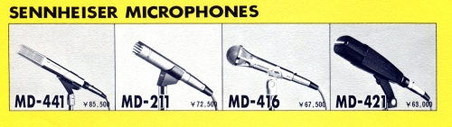
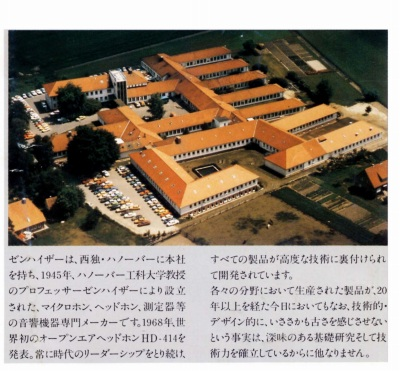
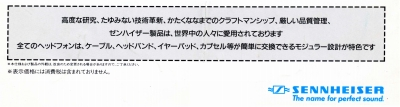
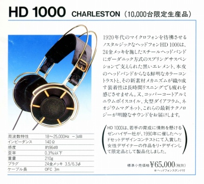

ゼンハイザー カタログギャラリー
(カタログ画像をクリックすると原寸大のPDFファイルが開きます）
�@1974年頃のカタログ
1974年頃に作成され、75年頃使われたものと思われる。印刷された価格が修正されていた。
�A1978年頃のカタログ
ノーマルの414から414Xに移行した後のカタログ。末尾にはまだマイクロフォンも掲載されていた。

（巻末収録のマイク群）
�B1979年頃のカタログ
414X等が主力の時代。表紙は424X。末尾にコンデンサー型unipolar2000と無線機HDI
434/SI
434が掲載されているが、どちらも価格が入っていない。この両機種については正式な価格が掲載された資料を今のところみたことがない。このカタログにはマイクロフォンは掲載されていない。
�C1985年頃のカタログ
ポスト414系が主力の時代。しかし表紙は414SL。この表紙と同じデザインの1987年頃のカタログが存在する。
�D1988年頃のカタログ
ネオジウムマグネット導入期の機種が主力の時代。表紙は540referenceGOLD。現在手元にあるカタログでは最後の「西ドイツ時代」のカタログ。

（カタログ末尾の本社の写真）
�E1989年秋頃のカタログ
ネオジウムマグネット導入期の機種の改良機がでる前の時代。表紙は560ovation。この頃までは日本に入って来るような機種はほぼみなドイツ製だった。

（当時は全機種が「ゼンハイザーモジュラーシステム」対応機だった）
�F1993年頃のカタログ
ネオジウムマグネット導入期の機種の改良機の時代。表紙は560ovation�U。この頃の機種からアイルランド製が主体となる。「音楽を詩的に〜」のフレーズはこの後しばらく使い続かれる。
（このカタログでロゴマークが現在のものになった。左が旧ロゴマーク。）
�G1994年のカタログ
Duofol振動板モデル、ゼンハイザーモジュラーシステム対応外のシリーズ（Expression
Line）など転換期のカタログ。表紙は580PRECISION。

（末尾に掲載されたHD1000。93年の発売で、95年の50周年とは無縁のモデル）
�H1995年のカタログ
表紙はIS850。
�I1995年の50周年記念モデルの広告
�J1997年のカタログ
表紙はHD600。